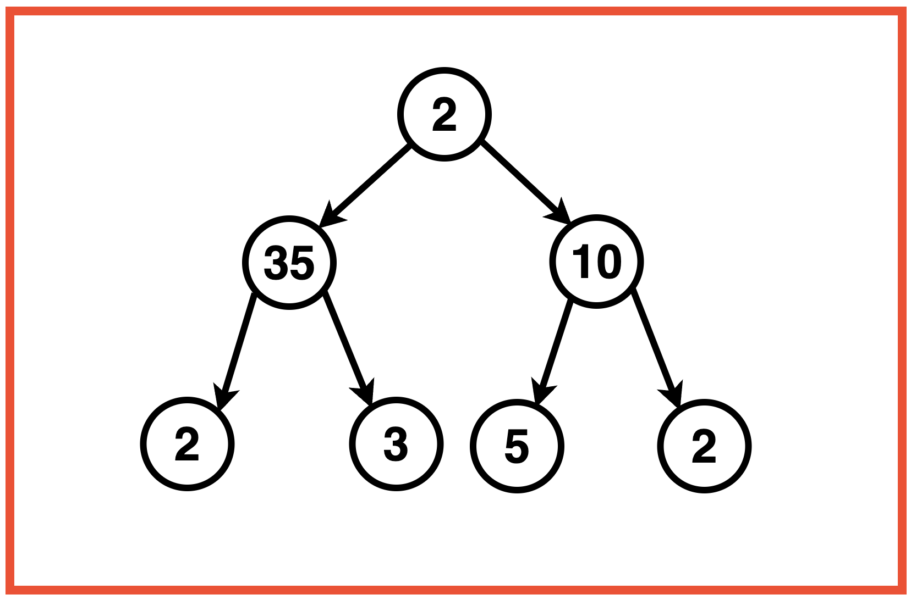
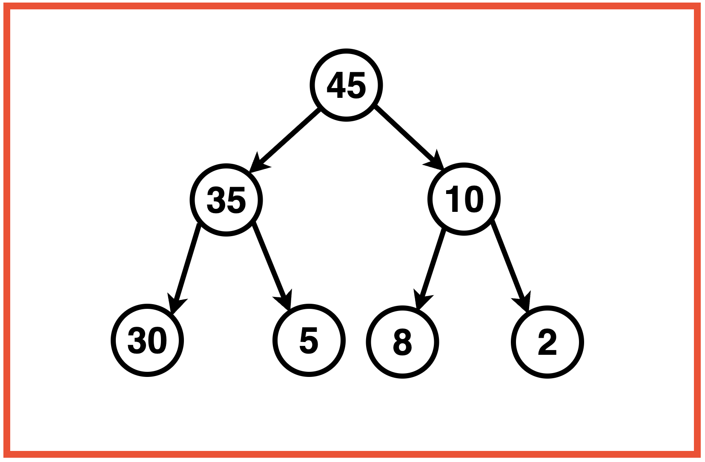
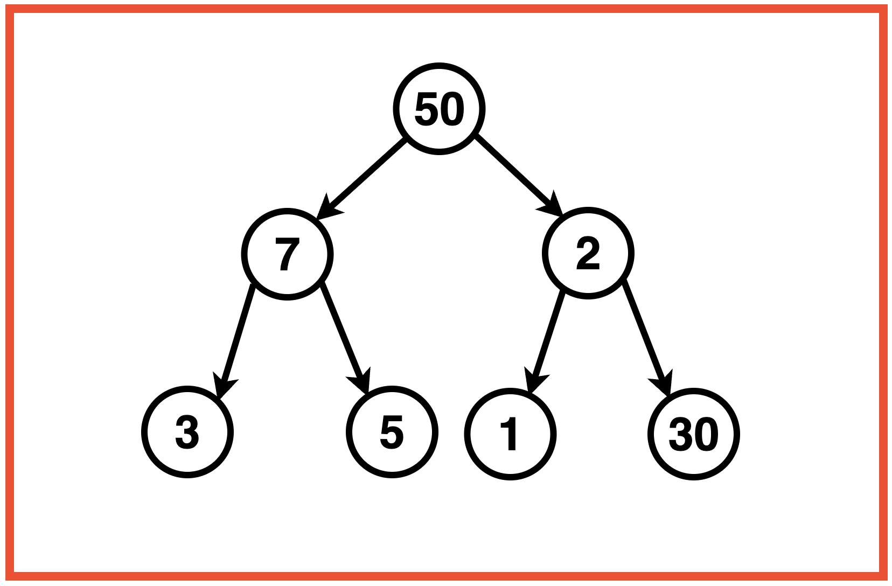
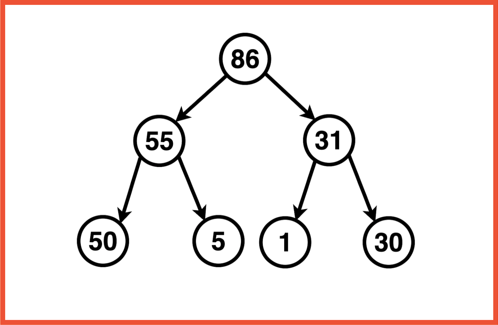
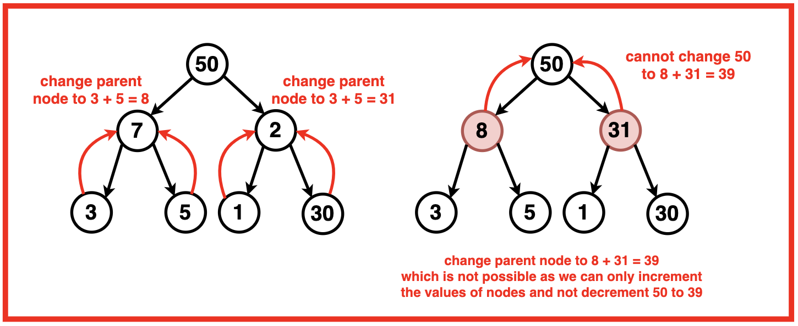
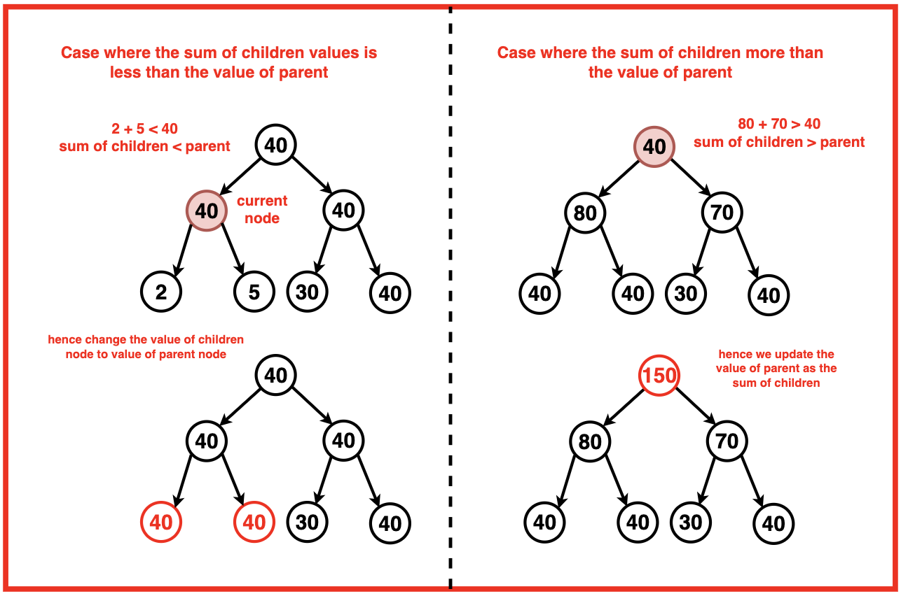
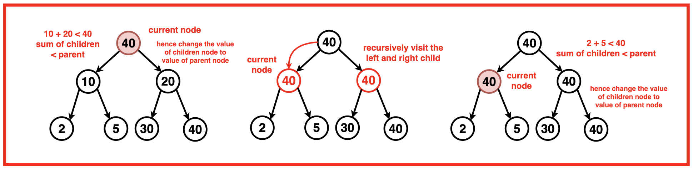
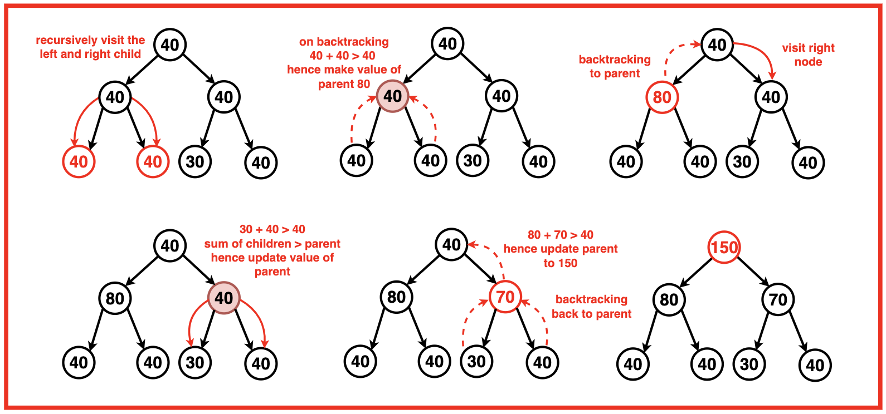

Problem Statement: Given a Binary Tree, convert the value of its nodes to follow the Children Sum Property.
The Children Sum Property in a binary tree states that for every node, the sum of its children's values (if they exist) should be equal to the node's value. If a child is missing, it is considered as having a value of 0.
Note:
The node values can be increased by any positive integer any number of times, but decrementing any node value is not allowed.
A value for a NULL node can be assumed as 0.
We cannot change the structure of the given binary tree.
Examples
Example 1:Input:Binary Tree: 2 35 10 2 3 5 2
Output: Binary Tree: 45 35 10 30 5 8 2Explanation: We cannot decrement the value of the node but only increment. There are many different ways to do this but we have to ensure that we are only increasing the values of the nodes in such a way that its value is equal to the sum of its left and right children.Example 2:Input:Binary Tree: 50 7 2 3 5 1 30
Output : Binary Tree: 50 55 5 86 1 31 30 Explanation: We modify the tree in such a way that the value of each node becomes the value of its left and right children. If a node is a left or right child and its parent is of a greater value, since we cannot decrease the value of the parent, we increase the value of the children nodes so that the Binary Tree follows the children sum property.
Disclaimer: Don’t jump directly to the solution, try it out
yourself first.
Optimal Approach
Algorithm / Intuition
The constraint is that we cannot decrease the value of any node, only increase it. Also, the structure of the binary tree cannot be changed.
If we follow a bottom-up approach and try to adjust parent values based on children, we may reach a situation where the sum of children exceeds the parent's value, requiring us to decrease the parent's value, which is not allowed.

With just a bottom-up approach, we cannot guarantee that the Children Sum Property will be satisfied at each level. It might work for some cases but not for all. There's no clear strategy to ensure that the property holds true for the entire tree.
A key insight here is that there's no restriction on how much we can increase the value of each node. Hence, we have the flexibility to adjust the values as needed to ensure that the Children Sum Property holds true at every node in the tree.

This means that if the sum of the values of a node's children is less than the node's value, we can simply increase the values of the children (and potentially the grandchildren and so on) until the property is satisfied.
Using recursive calls, we traverse the binary tree, addressing each node and its children iteratively. At each step, we calculate the sum of the children's values and compare it with the parent node's value.
Algorithm:
Step 1: Base CaseStart by checking if we've reached the end of a branch in the tree. If the current node is null, simply return.
Step 2: Calculate Children Sum: For each non-null node, calculate the sum of the values of its left and right children, if they exist. Add up the values of the left and right children (if they are not null) and store this sum in a variable called child.
Step 3: Comparison and Value Update:
Compare the sum of the children (child) with the current node's value.

If the sum of children is greater than or equal to the current node's value, we update the value of the parent to the sum of the children.

If the sum of children is smaller than the current node's value, we need to make an adjustment to ensure the property holds. However, remember that we cannot decrease the value of any node. So, instead, we update one of the children's values to match the current node's value.
Step 4: Recursive Calls:
For each node in the current level:
After handling the current node, we recursively call the function on the left and right children of the current node.
Step 5: Update Current Node's Value: Once both children have been processed, we recalculate the total sum of the values of the left and right children and update the current node’s value to match the total sum of its children.
Code
#include <iostream>
#include <unordered_map>
#include <vector>
#include <queue>
using namespace std;
// TreeNode structure
struct TreeNode {
int val;
TreeNode *left;
TreeNode *right;
TreeNode(int x) : val(x), left(nullptr), right(nullptr) {}
};
class Solution {
public:
// Function to change the values of the nodes
// based on the sum of its children's values.
void changeTree(TreeNode* root) {
// Base case: If the current node
// is NULL, return and do nothing.
if (root == NULL) {
return;
}
// Calculate the sum of the values of
// the left and right children, if they exist.
int child = 0;
if (root->left) {
child += root->left->val;
}
if (root->right) {
child += root->right->val;
}
// Compare the sum of children with
// the current node's value and update
if (child >= root->val) {
root->val = child;
} else {
// If the sum is smaller, update the
// child with the current node's value.
if (root->left) {
root->left->val = root->val;
} else if (root->right) {
root->right->val = root->val;
}
}
// Recursively call the function
// on the left and right children.
changeTree(root->left);
changeTree(root->right);
// Calculate the total sum of the
// values of the left and right
// children, if they exist.
int tot = 0;
if (root->left) {
tot += root->left->val;
}
if (root->right) {
tot += root->right->val;
}
// If either left or right child
// exists, update the current node's
// value with the total sum.
if (root->left or root->right) {
root->val = tot;
}
}
};
// Function to print the inorder
// traversal of the tree
void inorderTraversal(TreeNode* root) {
if (root == nullptr) {
return;
}
inorderTraversal(root->left);
cout << root->val << " ";
inorderTraversal(root->right);
}
int main() {
// Create the binary tree
TreeNode* root = new TreeNode(3);
root->left = new TreeNode(5);
root->right = new TreeNode(1);
root->left->left = new TreeNode(6);
root->left->right = new TreeNode(2);
root->right->left = new TreeNode(0);
root->right->right = new TreeNode(8);
root->left->right->left = new TreeNode(7);
root->left->right->right = new TreeNode(4);
Solution sol;
// Print the inorder traversal
// of tree before modification
cout << "Binary Tree before modification: ";
inorderTraversal(root);
cout << endl;
// Call the changeTree function
// to modify the binary tree
sol.changeTree(root);
// Print the inorder traversal
// after modification
cout << "Binary Tree after Children Sum Property: " ;
inorderTraversal(root);
cout << endl;
return 0;
}
import java.util.LinkedList;
import java.util.Queue;
// TreeNode structure
class TreeNode {
int val;
TreeNode left;
TreeNode right;
public TreeNode(int x) {
val = x;
left = null;
right = null;
}
}
public class Solution {
// Function to change the values of the nodes
// based on the sum of its children's values.
public void changeTree(TreeNode root) {
// Base case: If the current node
// is null, return and do nothing.
if (root == null) {
return;
}
// Calculate the sum of the values of
// the left and right children, if they exist.
int child = 0;
if (root.left != null) {
child += root.left.val;
}
if (root.right != null) {
child += root.right.val;
}
// Compare the sum of children with
// the current node's value and update
if (child >= root.val) {
root.val = child;
} else {
// If the sum is smaller, update the
// child with the current node's value.
if (root.left != null) {
root.left.val = root.val;
} else if (root.right != null) {
root.right.val = root.val;
}
}
// Recursively call the function
// on the left and right children.
changeTree(root.left);
changeTree(root.right);
// Calculate the total sum of the
// values of the left and right
// children, if they exist.
int tot = 0;
if (root.left != null) {
tot += root.left.val;
}
if (root.right != null) {
tot += root.right.val;
}
// If either left or right child
// exists, update the current node's
// value with the total sum.
if (root.left != null || root.right != null) {
root.val = tot;
}
}
}
// Function to print the inorder
// traversal of the tree
class TreeTraversal {
public static void inorderTraversal(TreeNode root) {
if (root == null) {
return;
}
inorderTraversal(root.left);
System.out.print(root.val + " ");
inorderTraversal(root.right);
}
}
class Main {
public static void main(String[] args) {
// Create the binary tree
TreeNode root = new TreeNode(3);
root.left = new TreeNode(5);
root.right = new TreeNode(1);
root.left.left = new TreeNode(6);
root.left.right = new TreeNode(2);
root.right.left = new TreeNode(0);
root.right.right = new TreeNode(8);
root.left.right.left = new TreeNode(7);
root.left.right.right = new TreeNode(4);
Solution sol = new Solution();
// Print the inorder traversal
// of tree before modification
System.out.print("Binary Tree before modification: ");
TreeTraversal.inorderTraversal(root);
System.out.println();
// Call the changeTree function
// to modify the binary tree
sol.changeTree(root);
// Print the inorder traversal
// after modification
System.out.print("Binary Tree after Children Sum Property: ");
TreeTraversal.inorderTraversal(root);
System.out.println();
}
}
class TreeNode:
def __init__(self, x):
self.val = x
self.left = None
self.right = None
class Solution:
def changeTree(self, root):
# Base case: If the current node
# is None, return and do nothing.
if root is None:
return
# Calculate the sum of the values of
# the left and right children, if they exist.
child = 0
if root.left:
child += root.left.val
if root.right:
child += root.right.val
# Compare the sum of children with
# the current node's value and update
if child >= root.val:
root.val = child
else:
# If the sum is smaller, update the
# child with the current node's value.
if root.left:
root.left.val = root.val
elif root.right:
root.right.val = root.val
# Recursively call the function
# on the left and right children.
self.changeTree(root.left)
self.changeTree(root.right)
# Calculate the total sum of the
# values of the left and right
# children, if they exist.
tot = 0
if root.left:
tot += root.left.val
if root.right:
tot += root.right.val
# If either left or right child
# exists, update the current node's
# value with the total sum.
if root.left or root.right:
root.val = tot
# Function to print the inorder
# traversal of the tree
def inorderTraversal(root):
if root is None:
return
inorderTraversal(root.left)
print(root.val, end=" ")
inorderTraversal(root.right)
# Create the binary tree
root = TreeNode(3)
root.left = TreeNode(5)
root.right = TreeNode(1)
root.left.left = TreeNode(6)
root.left.right = TreeNode(2)
root.right.left = TreeNode(0)
root.right.right = TreeNode(8)
root.left.right.left = TreeNode(7)
root.left.right.right = TreeNode(4)
sol = Solution()
# Print the inorder traversal
# of tree before modification
print("Binary Tree before modification:", end=" ")
inorderTraversal(root)
print()
# Call the changeTree function
# to modify the binary tree
sol.changeTree(root)
# Print the inorder traversal
# after modification
print("Binary Tree after Children Sum Property:", end=" ")
inorderTraversal(root)
print()
// TreeNode structure
class TreeNode {
constructor(x) {
this.val = x;
this.left = null;
this.right = null;
}
}
class Solution {
// Function to change the values of the nodes
// based on the sum of its children's values.
changeTree(root) {
// Base case: If the current node
// is null, return and do nothing.
if (root === null) {
return;
}
// Calculate the sum of the values of
// the left and right children, if they exist.
let child = 0;
if (root.left) {
child += root.left.val;
}
if (root.right) {
child += root.right.val;
}
// Compare the sum of children with
// the current node's value and update
if (child >= root.val) {
root.val = child;
} else {
// If the sum is smaller, update the
// child with the current node's value.
if (root.left) {
root.left.val = root.val;
} else if (root.right) {
root.right.val = root.val;
}
}
// Recursively call the function
// on the left and right children.
this.changeTree(root.left);
this.changeTree(root.right);
// Calculate the total sum of the
// values of the left and right
// children, if they exist.
let tot = 0;
if (root.left) {
tot += root.left.val;
}
if (root.right) {
tot += root.right.val;
}
// If either left or right child
// exists, update the current node's
// value with the total sum.
if (root.left || root.right) {
root.val = tot;
}
}
}
// Function to print the inorder
// traversal of the tree
function inorderTraversal(root) {
if (root === null) {
return;
}
inorderTraversal(root.left);
console.log(root.val + " ");
inorderTraversal(root.right);
}
// Main function
function main() {
// Create the binary tree
const root = new TreeNode(3);
root.left = new TreeNode(5);
root.right = new TreeNode(1);
root.left.left = new TreeNode(6);
root.left.right = new TreeNode(2);
root.right.left = new TreeNode(0);
root.right.right = new TreeNode(8);
root.left.right.left = new TreeNode(7);
root.left.right.right = new TreeNode(4);
const sol = new Solution();
// Print the inorder traversal
// of tree before modification
console.log("Binary Tree before modification: ");
inorderTraversal(root);
console.log("");
// Call the changeTree function
// to modify the binary tree
sol.changeTree(root);
// Print the inorder traversal
// after modification
console.log("Binary Tree after Children Sum Property: ");
inorderTraversal(root);
console.log("");
}
// Call the main function
main();
Output
Binary Tree before modification: 6 5 7 2 4 3 0 1 8, Binary Tree after Children Sum Property: 6 17 7 11 4 25 0 8 8
Complexity Analysis
Time Complexity: O(N) where N is the number of nodes in the binary tree. This is because the algorithm traverses each node exactly once, performing constant-time operations at each node.
Space Complexity: O(N) where N is the number of nodes in the Binary Tree.
In the worst case scenario the tree is skewed and the auxiliary recursion stack space would be stacked up to the maximum height of the tree, resulting in a space complexity of O(N).
In the optimal case of a balanced tree, the auxiliary space would take up space proportional to O(log2N).
Video Explanation
Special thanks to Gauri Tomar for contributing to this article on takeUforward. If you also wish to share your knowledge with the takeUforward fam, please check out this article